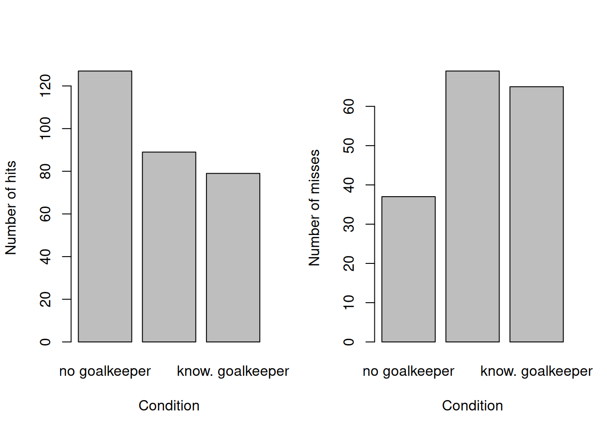
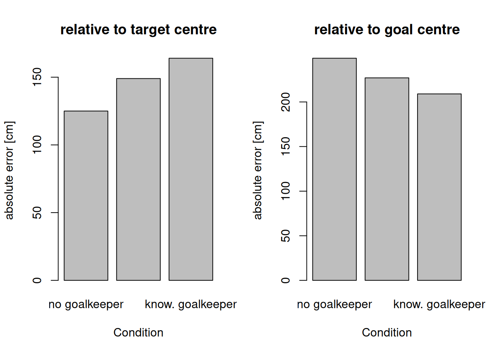

Foundations of scientific reading
Get these slides:
Dr Germano Gallicchio
Lecturer in Computational Psychophysiology
School of Sport Science, Bangor University, UK
On a computer press F11 to de/activate full-screen view.
For smartphone view and for pdf document: use “learning resources” link above.
Agenda
The structure of an empirical article
Background to the study: two strategies for taking a penalty kick
Reading the article: Introduction and Method
Reading the article: Results, and how statistical results are reported
Reading the article: Discussion, and implications for practice
The structure of an empirical article
| Section | Question it answers |
|---|---|
| Title and authors | What is the study about, and who conducted it? |
| Abstract | What was done and found, in about 200 words? |
| Introduction | What is already known, what is not, and what does this study ask (aims and hypotheses)? |
| Method | Who took part, what was manipulated and measured, and how? |
| Results | What was found, usually with statistical tests, tables and figures? |
| Discussion | What do the findings mean, how do they relate to theory, and what are the limitations and implications? |
| References | Which earlier work does the study build on? |
An efficient order of reading
Title and abstract: the overall picture.
Final paragraph of the Introduction: the aim and the predictions.
Method: participants, design, independent and dependent variables.
Tables and figures in the Results, and the sentences that describe them.
First and final paragraphs of the Discussion: the main conclusion and its implications.
The remaining text, for detail.
Structured reading sheet. Used in the reading tasks today and useful for revision.
Background to the paper
Two strategies when taking a football (soccer) penalty, depending on whether the movements of the goalkeeper are considered
Keeper-independent: ignore the goalkeeper
- Before the run-up, choose the target location
- Aim at the target location
- Shoot at the target location regardless of the goalkeeper’s actions
Keeper-dependent: attend to the goalkeeper
- Do not choose a target location before the run-up
- During the run-up, anticipate the direction of the goalkeeper’s dive
- Shoot in the opposite direction
Discussion in small groups: which strategy is preferable, and why?
Arguments in favour of the keeper-independent strategy
Navarro and colleagues summarise three arguments:
- There is insufficient time for a keeper-dependent strategy
If the goalkeeper moves within approximately 400 ms of foot–ball contact, kickers are less likely to place the ball in the empty half of the goal, and their kicks are less accurate.
- The keeper-independent strategy allows visual focus on the target
It permits more adaptive gaze behaviour: fixating the target provides visual information, and information about eye position, that supports accurate aiming (see the quiet eye, in the session on perception).
- Shots to the upper corners are very unlikely to be saved
Descriptive analyses of international competitions indicate that goalkeepers did not save shots directed at the upper corners.
Biomechanical studies indicate that a kick to an upper corner at a sufficient speed (above approximately 22 m/s) cannot be intercepted.
Can the goalkeeper really be ignored?
If these arguments are accepted, the keeper-independent strategy should be adopted. But can it be adopted fully? Can a penalty kicker ignore the goalkeeper?
The study by Navarro et al. (2013) addresses this question.
While reading the Method, compare the designs choices with what you would have done in your own study: which variables did the authors control? Which did they not? Which variables would you have controlled, and how? What are the advantages and disadvantages of the authors’ choices?
Navarro, M., van der Kamp, J., Ranvaud, R., & Savelsbergh, G. J. P. (2013). The mere presence of a goalkeeper affects the accuracy of penalty kicks. Journal of Sports Sciences, 31(9), 921–929. https://doi.org/10.1080/02640414.2012.762602
Assessment 1
The paper by Navarro et al. (2013) is the basis of assessment 1.
A one-hour online test of 20 multiple-choice questions, on Blackboard. It opens after today’s session. The deadline and full details are in the module handbook.
Demonstrations:
- Where to find this information in the module handbook, including the deadline
Can the deadline be extended? Yes, where there are valid reasons. Contact your personal tutor.
- How to access the full paper through the Talis reading list
- How to complete assessment 1
To obtain the highest marks, the slides are not sufficient: they are not exhaustive. The paper itself should be studied.
Read the paper: Introduction and Method
10:00
10 minutes. Complete sections 1–4 of the reading sheet.
Focus on:
What were the aims of this study?
Who were the participants, and how were they selected?
What was manipulated (independent variable)?
What was measured (dependent variables)?
Review questions: Introduction and Method
Where in an empirical article is the aim of the study normally stated?
- In the references
- At the end of the Introduction
- In the first table of the Results
- Only in the title
Correct response: b
In a repeated-measures (within-participant) design:
- each participant is tested in only one condition
- each participant is tested in every condition
- participants choose their condition
- there is no independent variable
Correct response: b
Why might the order of conditions be counterbalanced across participants?
- To increase the number of participants
- To prevent effects of practice or fatigue from being confounded with the conditions
- To make the conditions more difficult
- To avoid the need for a statistical test
Correct response: b
Only participants who passed a skill test took part. What is one consequence?
- The results cannot be analysed
- The findings apply most directly to skilled players and may not generalise to other populations
- The design becomes between-participants
- The dependent variable changes
Correct response: b
The experimental set-up
Each upper corner of the goal contained a target area, with a target circle at its centre.
The three conditions used in the study
Instruction: hit the target area indicated by the experimenter before each kick (left or right upper corner), with sufficient power, using a keeper-independent strategy.
Conditions (every participant performed all three):
no goalkeeper
goalkeeper
knowledgeable goalkeeper: the kicker told the goalkeeper the intended target before the kick
Performance coding used in the study
hit: the ball enters the intended target area
miss: the ball enters the goal, outside the target area
failure: the ball does not enter the goal
saved: the ball is blocked by the goalkeeper
not saved: the ball is not blocked by the goalkeeper
Dependent variable: the number of kicks in each category
Other dependent variables
Absolute error: the distance between where the ball crossed the goal line and the centre of the target (or the centre of the goal); an index of accuracy
Variable error: the variability of ball locations across repeated kicks; an index of inconsistency
Ball speed: the distance travelled divided by the flight time
Read the paper: Results
10:00
10 minutes. Complete section 5 of the reading sheet.
Focus on:
How did the numbers of hits, misses and failures differ across the three conditions?
How did the number of saves differ between the two goalkeeper conditions?
How did absolute and variable error differ across the three conditions?
How statistical results are reported
The study used statistical tests other than the t-test, but the logic is identical: a statistic value is compared with the values expected by chance if there were no true difference.
| Reported result | Reads as |
|---|---|
| χ²(4, N = 600) = 26.64, p < 0.001 | chi-square test on counts of 600 kicks: the distribution of outcomes differed significantly across conditions |
| F(2,18) = 7.87, p < 0.01 | analysis of variance across three conditions: absolute error differed significantly across conditions |
| p = 0.054, “marginally significant” | just above the conventional .05 criterion |
In Table I, superscript letters mark which conditions differed significantly from one another.
Some results: number of hits and misses
In the no-goalkeeper condition, the number of hits was significantly higher, and the number of misses significantly lower, than in the goalkeeper and knowledgeable-goalkeeper conditions.
Some results: absolute error

Relative to the target centre, absolute error was larger in the knowledgeable-goalkeeper condition than in the other two conditions. Relative to the goal centre, it was smallest in the knowledgeable-goalkeeper condition: shots were the most centralised, that is, closest to the goalkeeper.
Variable error did not differ across conditions: the shots were consistently displaced towards the goalkeeper, not merely more scattered. In the terms of the session on data and measurement: a systematic error, not a random one.
Review questions: Results
A result is reported as “p < 0.05”. This indicates that:
- the effect is large and important for performance
- a difference this large would rarely arise by chance if there were no true difference
- fewer than 5% of participants showed the effect
- the measurement was reliable
Correct response: b
A chi-square test is appropriate for comparing conditions when the dependent variable is:
- a mean distance in centimetres
- the number of observations falling into each category
- a reaction time
- a correlation between two measures
Correct response: b
In a results table, two conditions share the same superscript letter. This indicates that:
- the two conditions differed significantly
- the two conditions did not differ significantly from each other
- the values were estimated
- the conditions were tested on the same day
Correct response: b
A study reports p = 0.054 and describes the effect as “marginally significant”. Using the conventional criterion, the effect is:
- statistically significant
- not statistically significant
- large
- caused by an error in measurement
Correct response: b
Reading critically
Ball speed. Participants were instructed to exceed approximately 22 m/s, yet mean speeds were 17.5–18.8 m/s in all conditions (Table I). Only kicks below 22 m/s were saved.
Participants. Ten participants were selected from 27 by a pretest of aiming accuracy. The findings concern skilled amateur players.
Setting. The kicks were taken in an experiment, without the pressure of competition.
How might each point affect the conclusions that can be drawn?
Read the paper: Discussion
10:00
10 minutes. Complete sections 6–8 of the reading sheet.
Focus on:
How do the authors explain their results? Which theory do they use?
Which alternative explanation do they consider?
Which applied recommendations do they make, for example for practice or coaching?
Review question: Discussion
In which section of an empirical article are the limitations of a study and the directions for future research normally reported?
- Abstract
- Method
- Results
- Discussion
Correct response: d
Practical take-aways (based on this paper)
- How would you advise a coach who asked for a recommended penalty strategy?
The study supports the keeper-independent strategy as the more secure choice, but shows that it is difficult to adopt fully. The authors recommend practising in the presence of a goalkeeper, and training gaze control (e.g., quiet eye training), so that gaze is directed at the target and the ball rather than at the goalkeeper.
- Example. 5 July 2014, quarter-final of the 2014 FIFA World Cup in Brazil: Netherlands – Costa Rica.